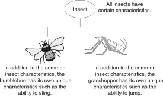
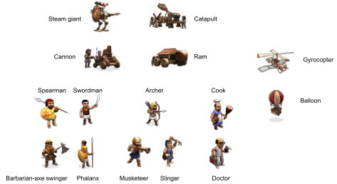
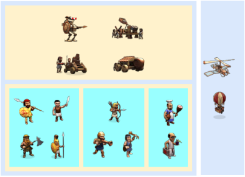
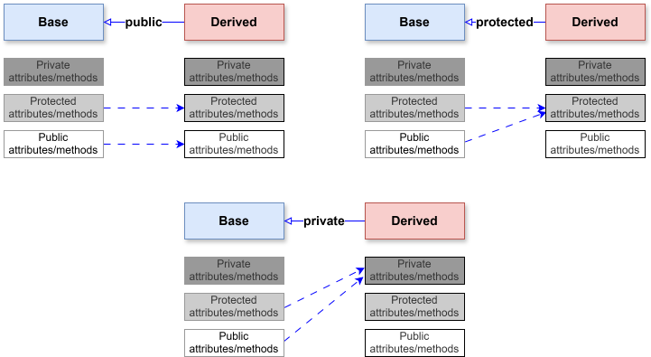
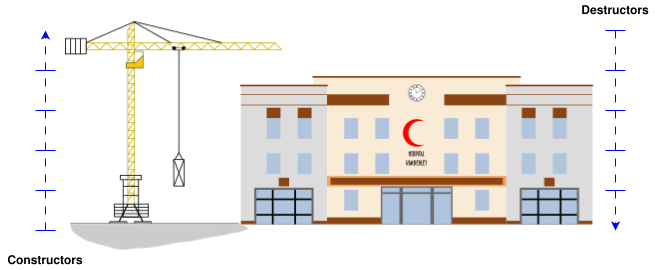
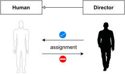
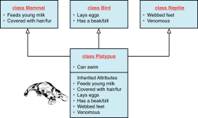

4 INHERITANCE & AGGREGATION
4.1 Introduction to inheritance
What Is Inheritance?
Inheritance allows a new class to be based on an existing class. The new class inherits all the member variables and functions (except the constructors and destructor) of the class it is based on.

Inheritance and the “Is a” Relationship
When one object is a specialized version of another object, there is an “is a” relationship between them. For example, a grasshopper is an insect. Here are a few other examples of the “is a” relationship.
- A poodle is a dog.
- A car is a vehicle.
- A tree is a plant.
- A rectangle is a shape.
- A football player is an athlete.
Inheritance involves a base class and a derived class.
class <Derived Class> : <Type Of Inheritance> <Base Class>
{
public:
<public attributes/functions>
private:
<private attributes/functions>
};Inheritance in UML
- Inheritance between classes.

Examples of Inheritance Taken from Daily Life
| Base Class | Example Derived Classes |
|---|---|
| Fish | Goldfish, Carp, Tuna |
| Mammal | Human, Elephant, Lion, Platypus |
| Bird | Crow, Parrot, Ostrich, Kiwi, Platypus |
| Shape | Circle, Polygon |
| Polygon | Triangle, Octagon |
Listing 1
#include <iostream>
using namespace std;
class Fish {
public:
bool FreshWaterFish;
void Swim() {
if (FreshWaterFish)
cout << "Swims in lake" << endl;
else
cout << "Swims in sea" << endl;
}
};
class Tuna: public Fish {
public:
Tuna() {
FreshWaterFish = false;
}
};
class Carp: public Fish {
public:
Carp() {
FreshWaterFish = true;
}
};
int main() {
Carp myLunch;
Tuna myDinner;
cout << "Getting my food to swim" << endl;
cout << "Lunch: ";
myLunch.Swim();
cout << "Dinner: ";
myDinner.Swim();
return 0;
}4.2 Hierarchical organization of concepts
Class Hierarchies
A base class can also be derived from another class.
- Sometimes it is desirable to establish a hierarchy of classes in which one class inherits from a second class, which in turn inherits from a third class
- In some cases, the inheritance of classes goes on for many layers.

Hierarchical organization of concepts
- A group of concepts is divided into sub-groups according to some criterion.
- We should use only one criterion at a time to classify a group of concepts.

- Concepts are recursively classified into subgroups


- It is possible to have different ways to create logical hierarchical organization of concepts!
4.3 Types of inheritance
Protected Members and Class Access
Protected members of a base class are like private members, but they may be accessed by derived classes. The base class access specification determines how private, public, and protected base class members are accessed when they are inherited by the derived classes.
Types of inheritance (in C++)
- There are 3 types of inheritance in C++:
- public inheritance: public and protected of the base class become public and protected of the derived class.
- protected inheritance: public and protected of the base class become protected of the derived class.
- private inheritance: public and protected of the base class become private of the derived class.
- Notes: from now on, if there is no mention of what type of inheritance, it means public inheritance

4.4 Derived class
Member functions inheritance
- Member functions of the base class are inherited in the derived class, except:
- Constructors
- Destructors
- Assignment operators
Order of Construction/Deconstruction
The base class’s constructor is called before the derived class’s constructor. The destructors are called in reverse order, with the derived class’s destructor being called first.
When a new object of a derived class is created:
- The constructor of the base class is invoked first.
- Then, the constructor of the derived class is invoked.
- In the constructor of the derived class, we can specify which constructor of the base class is called. Otherwise, the default constructor of the base class will be invoked.
When an object of the derived class finishes its lifespan:
- The destructor of the derived class is invoked first.
- Then, the destructor of the base class is called later.

Base Class Initialization
- Using initialization lists and in invoking the appropriate base class constructor via the constructor of the derived class
class Base {
public:
Base(int SomeNumber) { // overloaded constructor
// Do something with SomeNumber
}
};
class Derived: public Base {
public:
Derived(): Base(25) { // instantiate class Base with
// argument 25
// derived class constructor code
}
};Derived Class Overriding Base Class Methods
- Sometimes, we need to “re-define” the member functions of a base class in a derived class. It can be done by implements the same functions in the
class Derivedwith the same return values and signatures as in theclass Baseit inherits from
Notes
This re-definition will hide other overloading member functions of this function from the base class.
Listing 2
#include <iostream>
using namespace std;
class Fish {
private:
bool FreshWaterFish;
public:
// Fish constructor
Fish(bool IsFreshWater) : FreshWaterFish(IsFreshWater){}
void Swim() {
if (FreshWaterFish)
cout << "Swims in lake" << endl;
else
cout << "Swims in sea" << endl;
}
};
class Tuna: public Fish {
public:
Tuna(): Fish(false) {}
void Swim() {
cout << "Tuna swims real fast" << endl;
}
};
class Carp: public Fish {
public:
Carp(): Fish(true) {}
void Swim() {
cout << "Carp swims real slow" << endl;
}
};
int main() {
Carp myLunch;
Tuna myDinner;
cout << "Getting my food to swim" << endl;
cout << "Lunch: ";
myLunch.Swim();
cout << "Dinner: ";
myDinner.Swim();
return 0;
}Invoking Overridden Methods of a Base Class
- If we want to be invoke
Fish::Swim(),we need to use the scope resolution operator (::)
int main() {
...
myDinner.Fish::Swim();
...
}- If our specialized implementations in
Tuna:Swim()andCarp::Swim()need to reuse the base class’ generic implementation ofFish::Swim(), we use the scope resolution operator (::)
class Carp: public Fish {
public:
Carp(): Fish(true) {}
void Swim() {
cout << "Carp swims real slow" << endl;
Fish::Swim(); // use scope resolution operator::
}
};Problem with re-definition
class Base {
public:
void test() {...}
void test(int) {...}
void test(int, int) {...}
};
class Derived : public Base {
public:
void test(int) {...}
};int main() {
Derived obj;
int x, y;
...
obj.test(x); // OK
obj.test(x, y); // compile error
}- Solution 1: Use the scope resolution operator
:: - Solution 2: Use the
\textcolor{blue}{using}keyword in classDerivedto unhide other overloaded methods - Solution 3: Override all overloaded methods
The Problem of Slicing
- What happens when a programmer does the following?
Derived objectDerived;
Base objectBase = objectDerived;- Or, alternatively, what if a programmer does this?
void FuncUseBase(Base input);
...
Derived objectDerived;
FuncUseBase(objectDerived);- The compiler copies only the
Basepart ofobjectDerived—that is, not the complete object—rather than only that part of it that would fitBase.
The unwanted reduction of the part of data that makes the Derived a specialization of Base is called slicing.

Caution
To avoid slicing problems, don’t pass parameters by value.
Assignment operator
- Assignment operator is not inherited from the base class. To implement the assignment operator for the derived class:
- First, calling the assignment operator of the base class to assign data members of the base class .
- Then, implement the assignment for data member of the derived class part.
Derived& operator= (const Derived& CopySource)
{
if(this != ©Source) { // do not copy itself
// the base class copy
Base::operator=(CopySource)
// the derived class copy
}
return *this;
}4.5 Multiple inheritance
Multiple inheritance
Multiple inheritance is when a derived class has two or more base classes.

Listing 3
#include <iostream>
using namespace std;
class Mammal {
public:
void FeedBabyMilk() {
cout << "Mammal: Baby says glug!" << endl;
}
};
class Reptile {
public:
void SpitVenom() {
cout << "Reptile: Shoo enemy! Spits venom!" << endl;
}
};
class Bird {
public:
void LayEggs() {
cout << "Bird: Laid my eggs, am lighter now!" << endl;
}
};
class Platypus: public Mammal, public Bird, public Reptile {
public:
void Swim() {
cout << "Platypus: Voila, I can swim!" << endl;
}
};
int main() {
Platypus realFreak;
realFreak.LayEggs();
realFreak.FeedBabyMilk();
realFreak.SpitVenom();
realFreak.Swim();
return 0;
}4.6 Aggregation
Aggregation
Aggregation occurs when a class contains an instance of another class.
- When an instance of one class is a member of another class, it is said that there is a “has a” relationship between the classes.
- For example, the relationships that exist among the
Course,Instructor, andTextBookclasses can be described as follows:- The course has an instructor.
- The course has a textbook.
Aggregation

Examples of Aggregation Taken from Daily Life
| Part | Whole |
|---|---|
| Motor | Car (Car has a Motor) |
| Heart | Mammal (Mammal has a Heart) |
| Refill | Pen (Pen has a Refill) |
| Moon | Sky (Sky has a Moon) |
4.7 Workshop
✒ Quiz
I want some base class members to be accessible to the derived class but not outside the class hierarchy. What access specifier do I use?
If I pass an object of the derived class as an argument to a function that takes a parameter of the base class by value, what happens?
Which one should I favor? Private inheritance or composition?
How does the
usingkeyword help me in an inheritance hierarchy?A
class Derivedinheritsprivatefromclass Base. Anotherclass SubDerivedinheritspublicfromclass Derived. CanSubDerivedaccess public members ofclass Base?
💻 Exercises
Programming Challenges of chapter 13
1. Employee and ProductionWorker Classes
2. ShiftSupervisor Class
3. TeamLeader Class